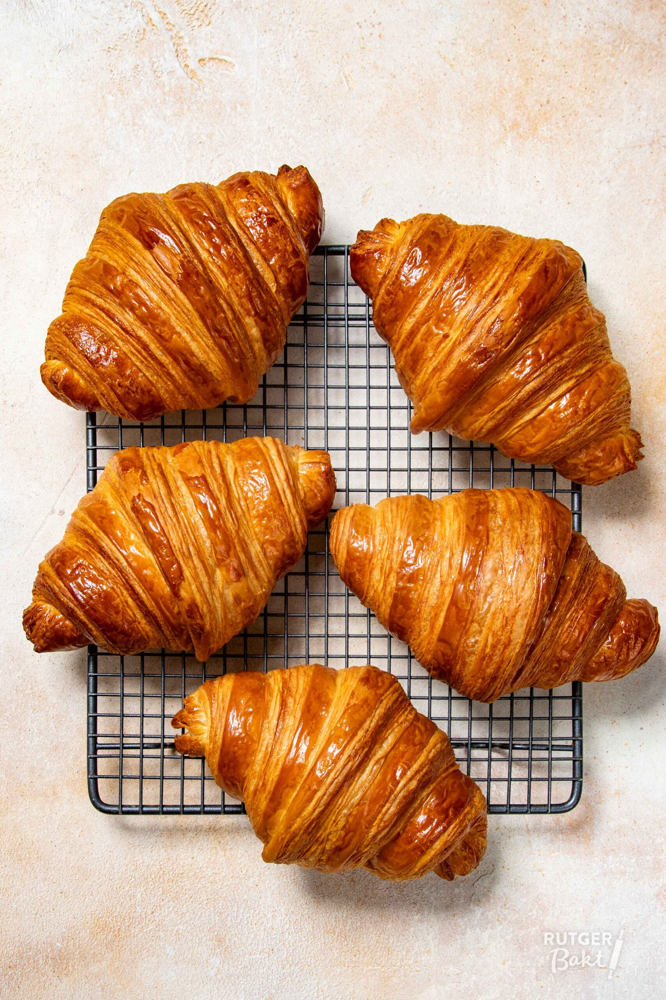

Pan Campesino
Tradicional, crujiente y elaborado diariamente.
Disfruta de pan artesanal recién horneado todos los días. Elaboramos nuestros productos con ingredientes frescos y de calidad.
Tradicional, crujiente y elaborado diariamente.

Preparado con mantequilla y horneado cada mañana.
Ideal para celebraciones y ocasiones especiales.
"El mejor pan de la ciudad, siempre fresco y delicioso."
María Gómez
"Excelente atención y gran variedad de productos."
Carlos Pérez